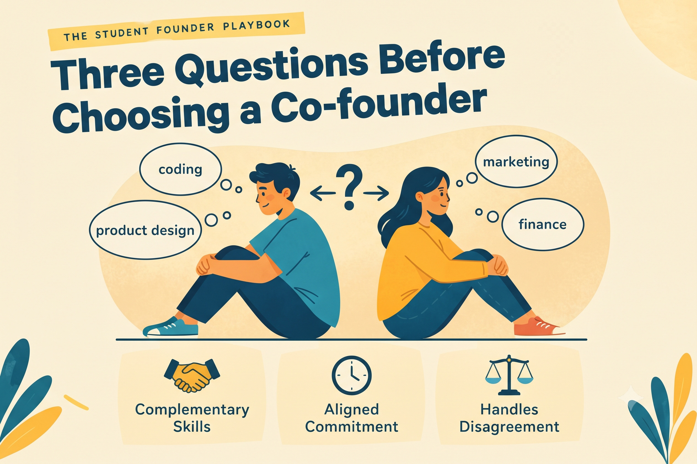

Three Questions Before Choosing a Co-founder

EIC MBM
Published on October 08, 2026

A co-founder shares your work, your risk, and often your ownership. Friendship is valuable, but it does not automatically make someone a good business partner.
Why This Decision Is Hard to Reverse
Many early startups do not fail because the idea was poor. They fail because founders disagreed about work, money, or direction, and nobody discussed those things clearly at the start. Choosing carefully now is far cheaper than untangling a partnership later, when resentment has already built up and both people feel they have been wronged.
Friendship makes this harder, not easier. Friends often avoid difficult conversations to protect the relationship, which is exactly the conversation a business partnership requires. A good co-founder decision is one where you can discuss uncomfortable topics without the relationship suffering.
Question One: Do They Bring Something You Do Not?
The strongest co-founders complement you rather than copy you. If you are strong at building the product, you may need someone who understands customers, sales, finance, or operations. Two people with identical strengths often end up doing the same work twice, while the important gaps remain open.
Be honest about your own weaknesses. Write down the three things you are weakest at and the three tasks you enjoy least. Then ask whether the person you are considering is strong exactly where you are weak. If they are not, you may still work together, but you should agree in advance on who will cover those gaps.
Question Two: Is the Commitment Aligned?
One person may see the venture as a weekend project, while the other wants to work on it full time. Neither view is wrong, but the mismatch causes real problems. The person who works harder begins to feel unfairly burdened, and the person who works less begins to feel pressured. Resentment builds quietly, often without either person naming it.
Talk openly about goals and timelines. How many hours per week can each of you give? What are your plans for the next six months? What would you do if the project did not work out? If you cannot answer these questions clearly together, the partnership is not ready yet, and that is a perfectly acceptable conclusion.
Question Three: How Do You Handle Disagreement?
Every founding team disagrees, so the real question is how you resolve disagreement.
Before committing, have a small disagreement deliberately, perhaps about a price, a name, or a feature. Pay attention to how each of you handles being challenged. Do they listen, explain their reasoning, and change their mind when they hear a better argument? Or do they become defensive and push harder?
This small test often tells you more than any formal interview. It shows how the two of you will make decisions when money or reputation is at stake, which is exactly when clear thinking matters most.
An Example That Held Together
Two students started a small project together. One built the product, and the other handled customers. For two months everything ran smoothly. Then the customer-facing partner received an internship offer that would take most of their time. Neither had discussed what would happen if one person's availability changed.
Because they had already talked about commitment, the conversation was calm rather than angry. They sat down, agreed on a revised plan, and decided who would take over which tasks. The project continued, and so did the friendship. Their earlier honesty about commitment made the change manageable.
Put It in Writing
Once you agree, write down the basics: who does what, how decisions are made, how money or equity is divided, and what happens if someone wants to leave. This does not need to be a legal contract at the start, but it should be specific enough that you can both point to it later. Most arguments between co-founders happen because two people remember the same conversation differently.
Key Takeaway
Choose for complementary skills, aligned commitment, and the way the person handles disagreement.
Reflect
What is the one skill you would most want a co-founder to bring to your project?